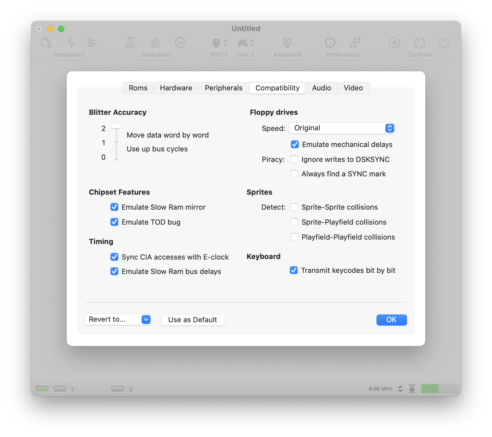

Compatibility settings
Blitter accuracy
Amiga supports three Blitter accuracy levels. Level 0 is the fastest option. In this mode, all data is moved together in a single chunk when the BLTSIZE register is written. Although this option is far from being accurate, many games do work with this option. In level 1, the Blitter also moves the data in a single chunk, just as in level 0. However, bus timing is emulated afterwards. This means that vAmiga blocks the data bus in exactly the same cycles as the real Blitter would. Level 2 is recommended in all scenarios where high accuracy is required. In this mode, the Blitter is emulated cycle by cycle. It transfers data in the exact same cycles as the real Blitter would.
Emulate Slow Ram Mirror
This option enables a special Agnus feature that makes Slow Ram accessible to DMA. In the 512 MB Chip Ram + 512 Slow Ram configuration, the ECS Agnus revisions map Slow Ram to the second Chip Ram segment. If an OCS Agnus is selected, this option has no effect.
Emulate TOD bug
The Amiga CIAs exhibit a bug in the circuitry of the 24-bit counter, commonly referred to as the TOD bug. The bug is part of the increment logic which can falsely trigger a TOD interrupt. This happens when the alarm value matches the counter values at the time when the lowest three nibbles finished to increment.
Sync CIA accesses with E-clock
In the Amiga, the CIAs are driven by the M68000 CPU's E-clock, a special signal that is output at a frequency equal to one tenth of the native clock rate. Before the CPU can read or write a CIA register, it must synchronize with the E clock, which slightly slows down program execution. If you disable this option, synchronization with the E clock is skipped. In this case vAmiga can access CIA registers as fast as all other memory cells.
Emulate Slow-Ram bus delays
On a real Amiga, the CPU requires a free DMA cycle to access Slow Ram. Hence the name Slow Ram. Disabling this option removes this restriction, allowing the CPU to access Slow Ram at the same speed as Fast Ram.
Floppy drive speed
vAmiga supports two basic hard disk DMA modes: Standard DMA mode (compatible, but slow) and Turbo DMA mode (fast, but less compatible). In Standard DMA mode, vAmiga performs three DMA accesses per scan line, just like the original Amiga.
To speed up Standard DMA mode, drives can be run with an acceleration factor. In this case, several words are transferred in each DMA slot of the drive.
Turbo DMA is applied when the drive is configured as a Turbo drive. In this mode, data is transferred immediately when the DSKLEN register is written. Although this mode is far from being precise, many games and demos can be run in this mode without any issues.
Emulate mechanical delays
When this option is enabled, vAmiga imposes stricter timing constraints. That is, it emulates the acceleration and deceleration phases of the drive motor as well as the delay caused by the movement of the drive head from one cylinder to the next.
Piracy
These options are rarely needed, but can help to bypass copy protection mechanisms. The first option locks the DSKSYNC register. This means that any attempt to change the default SYNC word will be ignored by the emulator. The second option tells vAmiga to issue a disk sync interrupt even for the tracks that do not contain a SYNC word.
Sprites
vAmiga allows to disable the collision checking circuity which is part of Denise. By default, collision checking is disabled because it is expensive to emulate in software and only a few titles rely on it (e.g. Archon and Rotor).
Transmit key codes bit by bit
The keyboard is a central input device of the Amiga. While Commodore had equipped the Amiga 1000 and the Amiga 2000 with an external keyboard, they decided to integrate the keyboard directly into the case of the Amiga 500. This was only an aesthetic difference, though, as the connection to the motherboard was always the same. The keyboard first generates a key code for each pressed key. After that, it sends the code bit by bit to the CIA. As soon as the last bit is received, an interrupt is triggered and the interrupt handler takes over. By enabling this option, vAmiga emulates the bit-by-bit transmission exactly as described. Disabling this option tells vAmiga to skip the transmission phase and to write the generated keycode directly into the corresponding CIA register. This speeds up emulation, but is less accurate.